1 · Register und gemeinsame Spur
Vorhanden: B–8–ß Loop trennt Register, zeitliches Sampling und gemeinsame Spur. B, 8 und ß sind dort eine Formvergleichsfamilie, keine Operatoridentität.
NON-IDENTITY: gemeinsamer Lesegang ≠ gemeinsame Engine, gemeinsamer Carrier oder physischer Mechanismus.
Wir erweitern nicht das ganze Feld. Wir trennen zuerst Zustände, Maps, Relationen, Projektionen und Return — und fragen dann, unter welchen Bedingungen auf einem endlichen Raster tatsächlich Orientierung möglich ist.
Die vier Fenster gehören zu demselben mathematischen Lesegang, bleiben aber getrennte Instrumente. Die zusätzliche Bridge liest einen bereits verifizierten Anwendungsrecord; sie ist keine fünfte Evidenzquelle und keine zweite Engine.
Grenze: Die logarithmische Resonanz-/Atlas-Grafik ist ein Orientierungsbild. Sie belegt weder ein universelles Spektrum noch eine physikalische Kopplung der vier Instrumente. Die Application Bridge übernimmt keine Autorität von MOD:TESSAREC.
Das Numbergame ist der vorhandene ausführbare Erklärraum: Zahlenregeln und ihre Ansichten, keine zweite mathematische Quellenautorität. Ein Ansichtswechsel ist keine neue Rekurrenz. LIFE, Three Domains und Numbers behalten getrennte Zustände und Uhren.
Neu geprüft wird eine lokale Anzeigeabbildung: kritische Bahn → vorhandener Maskenschirm; TESA-Zellmittelpunkte → vorhandene Paraboloidschale. Vier Eckmittelpunkte liegen außerhalb der Kreisscheibe. Taille, fünf D-Lesemarken und Q°-Innenraum bleiben ohne neue Mechanismuszuordnung. Engineering-Return und Grenzen →
Der 3×3-Atlas ordnet drei Welten, drei mathematische Lesarten und drei Kontroll-/Adressinstrumente. Die Blue-Body-Kachel projiziert ausschließlich den gemeinsamen Takt: g → k mod 48 → frac(k/φ) → θ=2πu → e^{iθ} → rank₄₈ → 7·rank mod 48 → Q4×P3. Keine Dynamik wird gekoppelt und kein Carrier gleichgesetzt.
Vier vorhandene Perspektiven zusammen lesen. Die Schemata ordnen die Rollen; sie behaupten keinen gemeinsamen Generator. Originale und Bench bleiben an ihren bestehenden Orten.
Vorhanden: B–8–ß Loop trennt Register, zeitliches Sampling und gemeinsame Spur. B, 8 und ß sind dort eine Formvergleichsfamilie, keine Operatoridentität.
Implementiert: Die Bench zeigt AM / VM / PM als lokale Lesart zweier beschnittener Formen. VM markiert deren Überlappung. Das ist nicht exakt das vollständige Kreisscheibenmodell dieses Schemas.
Bench · Linsen, Falte & Rücklauf → · Berechnung und Grenzen →
Mathematische Unterscheidung: Linse A ∩ B; zwei übrige Seiten A ∖ B und B ∖ A; Außenraum relativ zu einem festgelegten Grundraum. Eine Grenze kann Linse und übrige Seite zugleich begrenzen.
In der Bench: „Linse ↔ andere Seite“ schaltet jetzt zwischen Überlappung und Differenzflächen der vorhandenen beschnittenen Polygone um, an derselben Quellphase. Vollständige Kreisscheiben/Lunen und der Außenraum bleiben davon getrennt. Die gelieferten Zwei-Kreise-Tafeln sind Bildquellen; ihr ursprünglicher Generator ist noch nicht identifiziert.
Vorhanden: deklarierter Sechs-Teller-Adapter mit 51,63° bis 52,13°; P3 bei 51,83° dient als Referenz. Ein vollständiger Record bleibt trotz lokal ausgeblendeter Samples erhalten.
Bildidee / offen: „Coil“ bezeichnet hier die gewundene Spur. Das Tower-Bild zeichnet offenbar sieben Aperturen, seine Formel n=0…5 beschreibt sechs. Ein siebter Teller und der ursprüngliche Generator bleiben ungeklärt.
Bench · Aperturstapel → · Bildlegende · Farben / Plates / Glyph Trace → · Quelllokaler Adapter →
Der dokumentierte Runtime-Test trennt upper(ß)=SS, lower(ẞ)=ß und casefold(ß)=casefold(ẞ)=ss. Gleiche Vergleichsausgabe rekonstruiert die ursprüngliche Zeichenfolge nicht eindeutig. Die Cut-/Fold-Lesarten von Diakritika bleiben visuelle Interpretationen, keine Schriftgenealogie oder geometrisch definierte Scherung.
ACR‑42 · Bericht · ACR‑45+ · Ergebnistabelle · Vorhandener Glyph-Cut-Marker
EMP‑03 dokumentiert im synthetischen Kreis-/Tangentenmodell den Wechsel 2 → 1 → 0 reeller Tangenten. Die Polarrelation bleibt davon getrennt. Die Gate-Tafeln unterscheiden exakte, begrenzte und nicht identifizierbare Rekonstruktion; Bildstatus ersetzt nicht den terminalen Quellenstatus.
A0 · bestehende Marker-Archäologie · EMP‑03 · Freeze und Grenzen
Mathfield: Geometrie, Maps und Beziehungen vergleichen. NumberMagick: Zahlen-/Adressbezüge prüfen. Papers: ausgewählte, präzise belegte Aussagen ausarbeiten — keine automatische Übernahme von Bildideen.
NumberMagick · Adresse und Kontext → · Bench · Kreis / Grid → · Science Desk → · NSN · vorhandene Quellen →
Die historische Switchyard‑Grafik wird als interaktive Rollenkarte neu gebaut. Der entscheidende Zusatz ist die Definitionstrennung: aktueller Beobachtungszustand, Marker, Schätzer und historisches Stellwerk sind verwandt, aber nicht identisch.
MAPS → TRANSLATION → BINDING → Q° → ALIGNMENT → MOTION
Der Record hält Position, Orientierung, lokalen Horizont, Zeit, Instrument und Projektionsregel zusammen. Er deklariert den Cut, unter dem ein Vergleich möglich wird.
NOT: source · world centre · truth · universal operator · transition itselfQ°ₙ(t) := {observer position, orientation, local horizon, time, instrument, projection rule}
Das Symbol benennt die lokale Konfiguration des Records. Die Operation ist der Cut; der Zustand ist nicht selbst die Welt oder der Übergang.
ẑ(t) = Σᵢ wᵢ(t) Tᵢ[mᵢ(t)] / Σᵢ wᵢ(t)
Ein gewichteter Binder ist in einem gemeinsamen Vergleichsraum gewöhnliche Mathematik. Für Rotationen, Mannigfaltigkeiten, Graphen oder gemischte Einheiten braucht er eine domänenspezifische Definition. Er ist nicht die universelle Q°‑Definition.
Wenn sich ein deklarierter Standpunkt ändert, können sich Wahrnehmung, Bedeutung und Handlung systematisch verändern. A0 untersucht, welche Änderungen reproduzierbar auftreten und welche Größen invariant bleiben.
x ─Vₛ→ yₛ ─Mₛ→ mₛ ─Πₛ→ aₛ · Q → O → A = Question → Orientation → ActionVₛ bildet denselben Carrier unter Position, Orientierung, Frame, Maßstab, Maske, Zeit und Instrument auf einen begrenzten View‑Record ab.
Mₛ ordnet dem View eine deklarierte Interpretation oder Klasse zu. Bedeutung folgt nicht allein aus visueller Ähnlichkeit.
Πₛ übersetzt den Bedeutungsrecord unter Ziel, Kosten, Gedächtnis und erlaubten Optionen in eine Handlung oder einen bewussten Hold.
Prüfgrenze: Nicht jeder Standpunktwechsel muss alle drei Ebenen verändern. Gerade erhaltene Wahrnehmung, stabile Bedeutung oder unveränderte Handlung sind wichtige Invarianten. „Systematisch“ verlangt eine deklarierte Transformation, Paarvergleich, Baseline und wiederholbaren Record; die Maschine strukturiert den Vergleich, Bedeutung und Entscheidung bleiben menschlich verantwortet.
Der Standpunkt erzeugt eine Ansicht; die Topologie fragt, welche Relationen unter einer deklarierten Transformation erhalten bleiben. Auf der reellen Linie liegen unendlich viele Punkte. Namen wie √2, √3, φ, √5, √7 und π markieren deshalb keine zusätzlichen Punkte, sondern exakt definierte Adressen oder Relationen auf einem bereits gewählten Träger.
Cₙ: V=n, E=n, F=0 ⇒ χ=V−E+F=0 · β₀=1 · β₁=1Hier zählt F angeheftete 2‑Zellen des Zellkomplexes, nicht die Zusammenhangsgebiete des ebenen Komplements. In der planaren Graphformel wird die Außenfläche dagegen mitgezählt.
| Record | Zellen | Invarianten | Lesart |
|---|---|---|---|
| C₅ · C₆ · C₇ | V=n, E=n, F=0 | χ=0, β₀=1, β₁=1 | Drei Diskretisierungen desselben verbundenen Ein-Zyklus-Typs. |
| gefülltes n‑Eck | V=n, E=n, F=1 | χ=1, β₀=1, β₁=0 | Die 2‑Zelle füllt den Zyklus; das eindimensionale Loch verschwindet. |
| geschlossene orientierbare Fläche | deklarierte 2‑dimensionale Zellstruktur | χ=2−2g | Erst hier bezeichnet g die Zahl topologischer Handles. Ein bloßer Graphzyklus ist noch kein Flächen‑Handle. |
Damit kann die Euler‑Charakteristik als Vergleichsgriff zwischen 5, 6 und 7 dienen: Sie zeigt, was trotz verschiedener Eckenzahl gleich bleibt. „Handle“ bleibt dabei doppelt typisiert — als informeller Vergleichsgriff und, nur bei einer Fläche, als mathematischer Genus.
χ = β₀ − β₁ + β₂ − … · für endliche Zellkomplexe
||(1,1)||=√2 · ||(1,1,1)||=√3 · ||(2,1)||=√5 · ||(2,1,1,1)||=√7
Diese Records hängen von Koordinaten und Metrik ab. Sie sind nicht automatisch topologische Invarianten.
π folgt aus Kreis, Umfang oder Phase; φ=(1+√5)/2 aus einer algebraischen Relation und unter anderem aus der Pentagonkonstruktion. Gemeinsam ist ihnen nur: Der erzeugende Operator muss deklariert bleiben.
e^{iθ}Rotation beziehungsweise komplexe Phase.
E_c(n)=n²+n+cArithmetische Leiter und endlicher Return.
χ=V−E+FZellzählung und, unter passenden Voraussetzungen, alternierende Betti-Summe.
Gleiche Euler‑Charakteristik allein beweist keine Homöomorphie. Winding in einer Projektion beweist nicht die Topologie des vollständigen Zustandsraums. Die archivierte Struktur C₅+C₆+C₆ ist ein Kuramoto‑Graphversuch, kein Nachweis einer ausgezeichneten natürlichen 5–6–7‑Geometrie.
Die Tafeln enthalten einen wertvollen Kern: denselben Carrier festhalten, Relationen verändern, Orientierung messen und Encodings wechseln. Die universelle Sprache und mehrere Quotientenformeln überschreiten jedoch den belegten Stand.
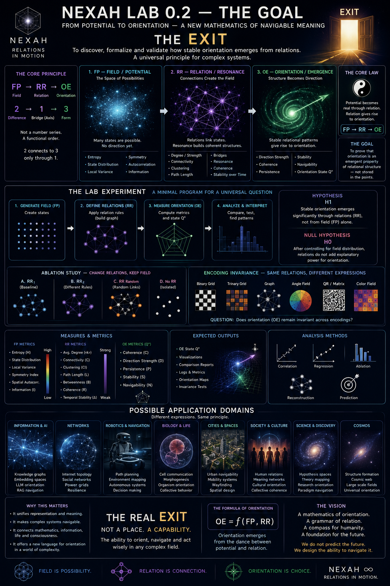
Stärkster Teil: Relation‑Ablation bei festem Feld und dieselbe Relation in mehreren Encodings.
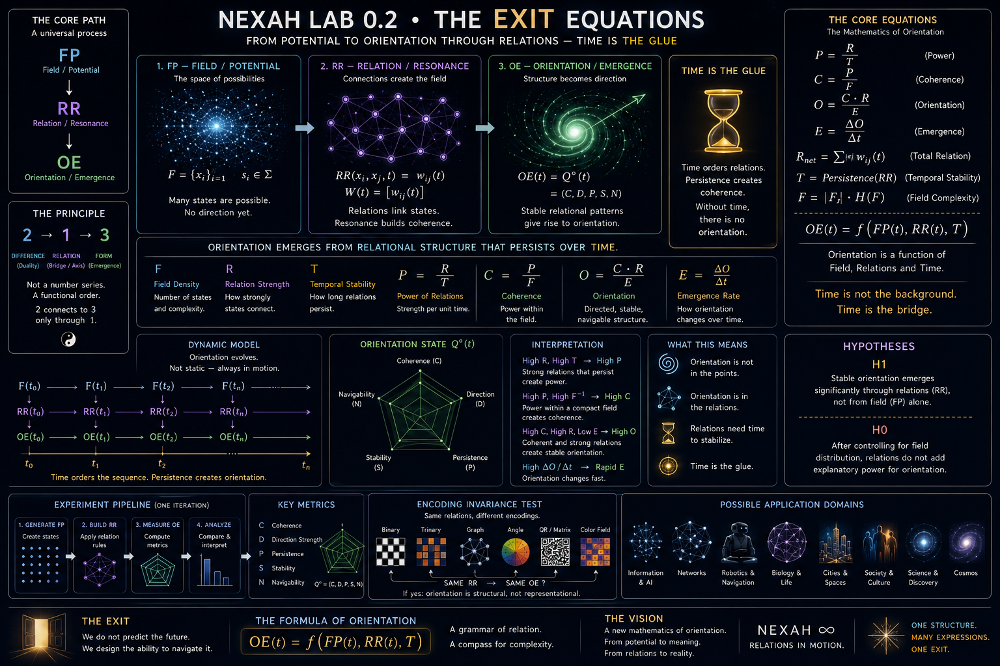
Stärkster Teil: Zeitfenster, Persistenz und explizites H₁/H₀. Schwächster Teil: dimensionslose Quotientenkette ohne unabhängige Definitionen.
| Stein | Prüfbare Lesart | Was noch fehlt |
|---|---|---|
| FP · Field/Potential | Endlicher Carrier, Zustandsverteilung oder festes Sample. | Einheiten, Samplingregel und Information Boundary. |
| RR · Relation/Resonance | Getypter Graph oder gewichtete Adjazenzmatrix W(t). | Warum eine Kante existiert; Nullmodell; keine automatische „Resonanz“. |
| OE · Orientation/Emergence | Vorab definierter Score oder Vektor, etwa Richtung, Kohärenz, Persistenz, Stabilität und Navigierbarkeit. | Skala, Ground Truth, Toleranzen und Unabhängigkeit der Metriken. |
| T · Time | Index, Beobachtungsfenster oder Persistenzdauer. | Update‑Regel; Zeit ist nicht mathematisch „Glue“, solange die Bindung nicht formalisiert ist. |
Carrier konstant halten; relationale Regeln systematisch abladieren oder permutieren; denselben Orientierungsrecord unter mehreren bijektiven Encodings vergleichen; vorher Score und Nullmodell festlegen.
OE(t) = g(FP(t), RR(t), T; θ)
Das ist ein Hypothesenschema — keine abgeleitete universelle Formel.
P=R/T · C=P/F · O=C·R/E · E=ΔO/Δt
Ohne unabhängige Variablen, Einheiten und Messprozeduren entstehen Zirkularität und Dimensionsprobleme. Auch „2→1→3“ bleibt eine visuelle Funktionsordnung, kein bewiesenes Gesetz.
Nicht weil das Raster eine verborgene Physik erzeugt, sondern weil es einen endlichen Carrier mit Adresse, Frame, exakten Restklassen, Transformation und Return bereitstellt. Der Rechner unten ist eine didaktische Lesefläche dieser Identitäten — kein neuer Lab‑Run.
R(R(n))=n · exact finite involution
n=x+111y ⇒ n≡x+y (mod 11)
Im vorhandenen Lauf: 1.121 Punkte, 100 % Adhärenz an `(x+y) mod 11 = 0`; 1.000 matched controls erreichten die exakte Struktur nicht.
111≡10 (mod 101) ⇒ n≡x+10y
Im vorhandenen Lauf: 122 Punkte, 100 % Adhärenz an `(x+10y) mod 101 = 0`; gleiche Kontrollgrenze.
Ein Frame plus Adresse, erlaubte Nachbarschaft oder Bewegung, Ziel/Kostenfunktion und Return. Damit kann ein Agent Positionen unterscheiden, Wege wählen und die Rückabbildung prüfen.
Keine Penrose‑Aperiodizität, kein Prime‑Kraftfeld, keine Riemann‑Dynamik, kein natürlicher Torus und keine physikalische Orientierung ohne zusätzliche Map und Evidenz.
„Mehr Grids“ heißt hier nicht mehr Bilder, sondern mehrere sauber getrennte Träger und Ansichten. Der Carrier trägt Adressen; eine Faltung ist eine deklarierte Map; das Envelope ist ein Rand- oder Readout-Objekt einer Einbettung; ein Channel ist erst nach einem Kopplungsvertrag definiert.
Ein Punkt ist die Adresse (x,y) im endlichen Carrier. Das row-major Encoding n=x+111y ist gewählt und bijektiv, aber nicht die einzig mögliche natürliche Anordnung.
G₁₁₁={0,…,110}² · A(n)=(n mod 111,⌊n/111⌋)Der bestehende Return dreht beide Koordinaten im endlichen Quadrat um.
R₁₁₁(x,y)=(110−x,110−y)A(1729)=(64,15) → (46,95)
ι₅(k)=6k mod 30 · ι₆(ℓ)=5ℓ mod 30
Direkte C₅→C₆‑Identifikation scheitert. Beide Zyklen lassen sich jedoch als Ankersets in denselben 12°‑Phasenraum einbetten; volle Ausrichtung kehrt nach 30 Schritten zurück.
Die starke Tafel liefert einen Forschungsvertrag, noch kein Gesetz: zwei nicht identische Seiten, ein erklärtes Interface, eine Update-Regel, eine Stabilitätsmetrik und ein Returntest. Ohne diese fünf Angaben bleibt „flow“ eine visuelle Lesart.
ρ:G→ℝ² · E=∂ρ(G) oder deklarierter Readout
Das Envelope kann eine Projektion, Randkurve oder Zusammenfassung des Carriers sein. Es übernimmt nicht stillschweigend dessen Adressen, Nachbarschaften oder Return.
X101, Q51, 6×6, 7×7, 8×8, 9×9, 11×11, 111×111, Pascal, Polar bleiben verschiedene Carrier oder Views. G11→G111 bleibt candidate „elevator recursion“; Lift und Return-Key sind offen.
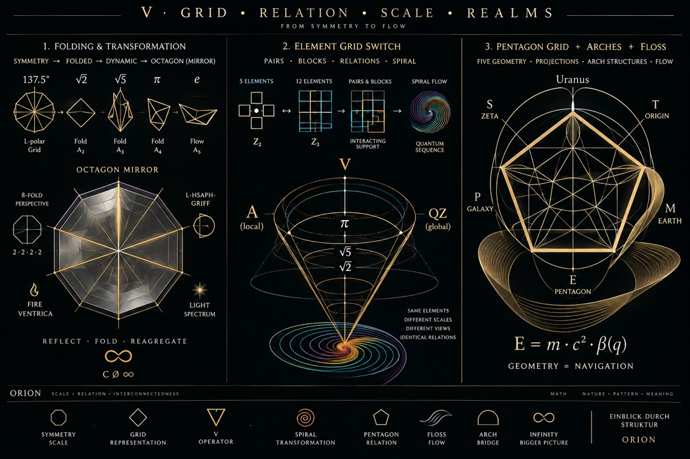
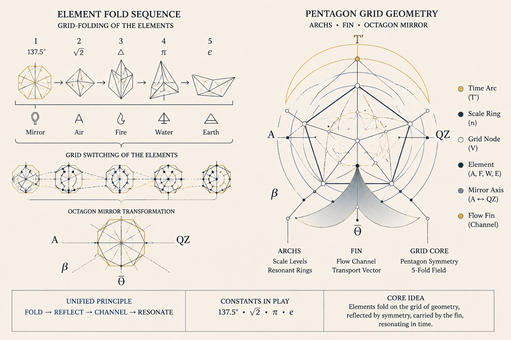

Der Basis‑100‑Shortcut wird als Vier‑Felder‑Rechteck, typisierte Boundary mit zwei Pillars und Hinge, Adjazenzgraph und deklarierter Pascal-Spiegeljoint lesbar. Die Ansicht bewahrt die exakte Arithmetik und macht zugleich sichtbar, welche Seam‑ und Orientierungsinformation das Kurzreadout komprimiert.
EXP09 war nicht der einzige belastbare Anschluss. Wiedergefunden sind das kontrollierende 111‑Grid‑Prüfmodul, die deterministisch replayte CRT/QRT‑Suite, der korrigierte QRT‑Carrier‑Pfad und der geschlossene HMA‑01‑CRT‑Audit. Die einzelnen EXP10/11/13/20‑Bildgeneratoren bleiben davon getrennt.
0…12320 sind Felder · 12321 = 111² ist die Anzahl.Mit n=i+111j adressiert das Quadrat genau 12.321 Positionen. 12320=(110,110) ist die letzte Position; 12321 liegt bereits außerhalb und fällt unter mod 12321 auf (0,0) zurück. Zugleich gilt 12320=160·77 und 12321≡1 (mod 77): Grid‑Return und CRT‑Return sind deshalb verschiedene Aussagen.
addresses 0…12320endlicher Carrier
111² = 3²·37²Kardinalität / erste Off‑Grid‑Adresse
1111²nächste Stufe der carry‑freien Repunit‑Quadratlinie
1²=1 · 11²=121 · 111²=12321 · 1111²=1234321 · Generator: REPUNIT₁₀(k)² für 1≤k≤9
11537 → 11573 → 11357Die drei Zahlen teilen das Ziffernmultiset 11357 und die Ziffernsumme 17. Sie sind dennoch drei verschiedene Carrier. Unter der QRT‑Adresse n=20q+r verlässt der Pfad die Spalte r=17 und kehrt zu ihr zurück.
(q,r)=(576,17)CRT₇,₁₁,₁₃,₁₉ = (1,9,6,4)
(578,13) · Δ=(+2,−4)gleiche Ziffernfamilie, andere Adresse
(567,17) · Δ=(−11,+4)Netto: (−9,0)
Fingerprint ≠ CRT-Rekonstruktion: Das registrierte Diagnoseprofil verwendet alle sieben Moduli 7,11,13,19,20,29,37. Der eingefrorene eindeutige CRT‑Return ist enger auf die paarweise teilerfremde Basis 7,11,13,19 und den Bereich 0≤n<19019 festgelegt.
Der vollständige festgeschriebene Registertest umfasst neun Zahlen: zusätzlich 11573, 11735, 13571, 13573. 12537 gehört zur Ziffernfamilie 12357; gemeinsame QRT‑Spalte bedeutet ausdrücklich nicht gleicher Generator oder gleiche Faktorisierung.
Integer, prime-index list or typed H_Q record.
Declared hinge, mask or bounded selection.
Explicit flip, FIT surface or projection.
Inverse where declared; align addresses.
Residual plus evidence ceiling.
Das vorhandene QRT‑Code‑HTML implementiert diese endliche Grammatik. Der Prime‑Ring‑Audit überträgt sie auf die ersten 50 einbasierten Primadressen: Cut nach Adresse 25, Umkehr des Suffixes 26…50, dieselbe Involution als Return, anschließend Adressvergleich mit Null‑Mismatch. Das zeigt eine funktionierende QRT‑Methode auf einem Prime‑Index‑Carrier — nicht, dass QRT Primzahlen erzeugt oder die Ringform privilegiert ist.
Das H_Q‑Format‑Elevator‑HTML testet anschließend 16 FIT‑Flächen: alle acht Gate‑IDs, normalisierte Geometrie, Maskenzonen und Distanzränge bleiben erhalten; Rohkoordinaten und Dezimalzerlegungen bleiben nicht invariant. Der getrennte State‑Update‑Audit findet dagegen keinen bestehenden Operator, der aus Return und Residual den nächsten Quellzustand erzeugt. Hier endet der belegte Mechanismus: Return = inverse/align/compare, nicht automatisch Feedback, Reset oder Rekurrenz.
NN reuse: ART:ROSETTA:QRT_FIXTURE · ART:NUMBER:H_Q_FORMAT · ART:NUMBER:H_Q_STATE · no new identity created
| Suite / Quelle | Was exakt gestützt ist | Reproduzierbarkeit | Claim ceiling |
|---|---|---|---|
| 111‑Grid CRT Return Science Lab custody + Source Binding in Lab und Mission Control | n=i+111j, 12.321 Felder, CRT₇×₁₁, Return 12320−n, Formatvergleich 111×111 / 112×110 | vollständige Enumerationsschleifen im kontrollierenden Prüfmodul | geprüftes Rastermodell; gewählte Einbettungen bleiben gewählt |
| CRT Elevator / QRT Format Lens Science Lab incoming gate | 9/9 Faktorisierungen und CRT‑Rekonstruktionen; 6/6 QRT‑Fälle; 12/12 Destruction Controls | 15 Artefakte in drei Replays byte‑identisch | Methode unterstützt, nicht adoptiert; keine neue Zahlentheorie oder Physik |
| Corrected 11357 carrier connection Mission Control intake | Pfad 11537→11573→11357, QRT‑Deltas, CRT‑Fingerprints, r=17‑Familie | 22/22 Checks; drei identische Replays | joined / not active; gleiche Familie ≠ gleicher Carrier |
| HMA‑01 Science Lab case study | Z/77Z ≅ Z/7Z × Z/11Z, eindeutige CRT‑Rekonstruktion, negative controls | Generator hma01_generate.py vorhanden; Audit geschlossen und eingefroren | Standardmathematik kompatibel; keine NEXAH‑Validierung |
| Transition & Identifiability Observatory V1.3 Science Lab frozen case study / Navigator lens | 15 Grid‑ und View‑Knoten, 15 typisierte Kanten; G111 = 111×111 = 12321 als Macro‑Grid‑Carrier | 53/53 Package‑Audit‑Checks; Ledger und Browserdaten gebunden | G11→G111 bleibt candidate: Lift‑Operator und Return‑Pfad nicht wiedergefunden |
Das gezeigte Observatory‑HTML ist die bereits vorhandene Brücke. Es trennt FIELD → GRID → NUMBER → PROJECTION → TRANSITION → OPERATOR und führt X101, Q51, 6×6, 7×7, 8×8, 9×9, 11×11, 111×111, Pascal und Polar als verschiedene Carrier oder Views. Für jedes Gelenk verlangt es Operator, erhaltene Information, Verlust und Return‑Key.
11×11 · 121 cellsrelation / observer lattice
111×111 · 12321 cellsmacro‑grid / coupling‑key carrier
coordinate viewbounded projection, kein neuer Carrier
Die Fuge ist registriert, aber nicht vorgetäuscht: G11→G111 ist im eingefrorenen Ledger eine candidate edge namens „elevator recursion“. Sie bewahrt die 11‑family address grammar; der kanonische Lift‑Pfad und sein Return‑Key sind weiterhin offen. Der A0‑Reader benutzt diese Grammatik, verändert aber das gefrorene Observatory nicht.
Die exakten Carrier‑ und CRT/QRT‑Resultate tragen die Zahlengelenke. Sie rekonstruieren nicht automatisch die pixelgenauen Erzeugungsregeln der historischen EXP10/11/13/20‑Plots. Deshalb bleiben deren Bildkarten unten mit ihrem eigenen Quellenstatus sichtbar.
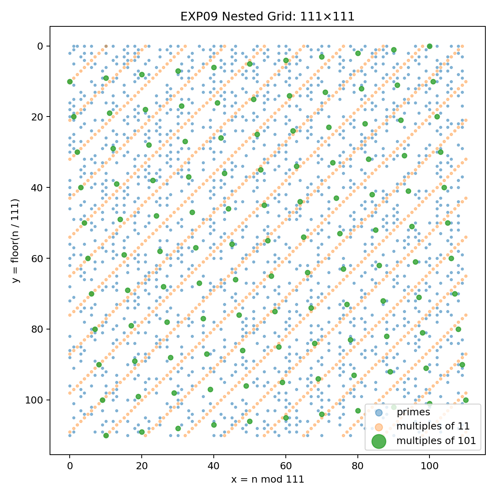
Die modularen Bänder sind exakt und periodisch. Die Prime‑Punkte sind ein Overlay, nicht die Ursache der Bänder.
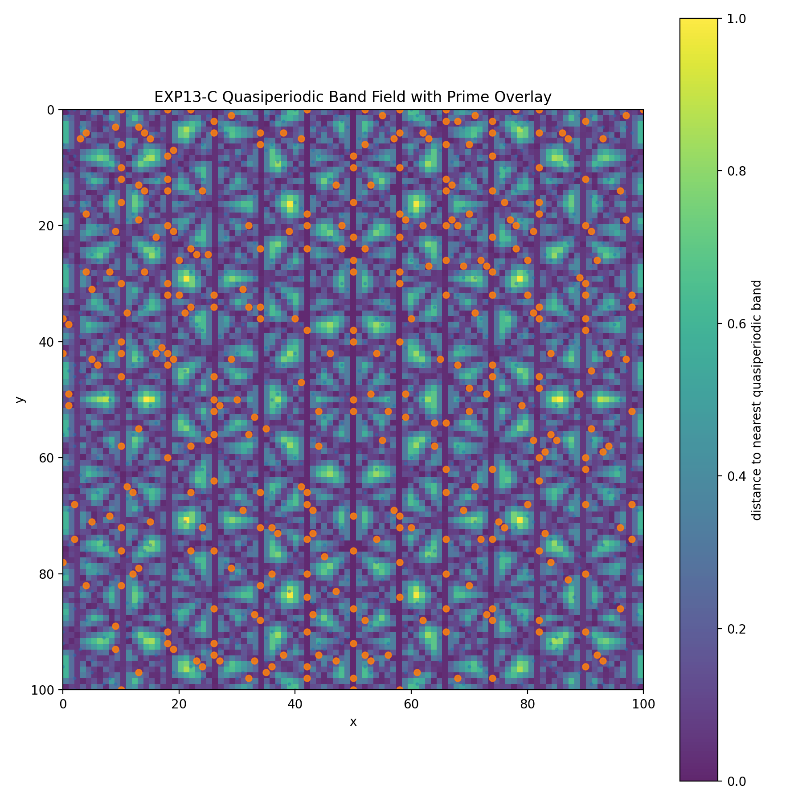
Quasiperiodisches Bildlabel beobachtet; Penrose‑Tiling nicht etabliert. Benötigt periodische und phase‑scrambled Kontrollen.
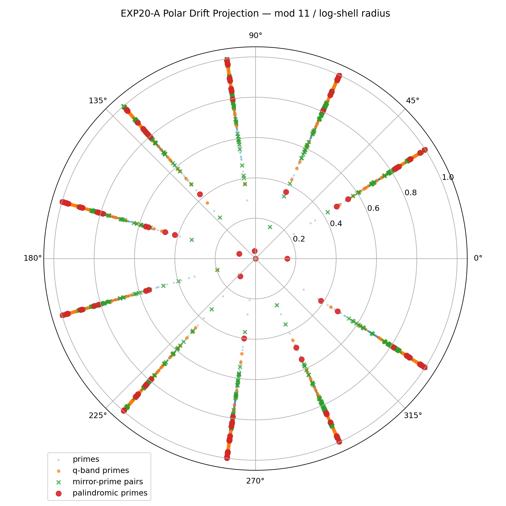
Winkelklasse mod 11 plus gewählte Radiusfunktion. Die elf Strahlen sind eine Konsequenz der Projektion.
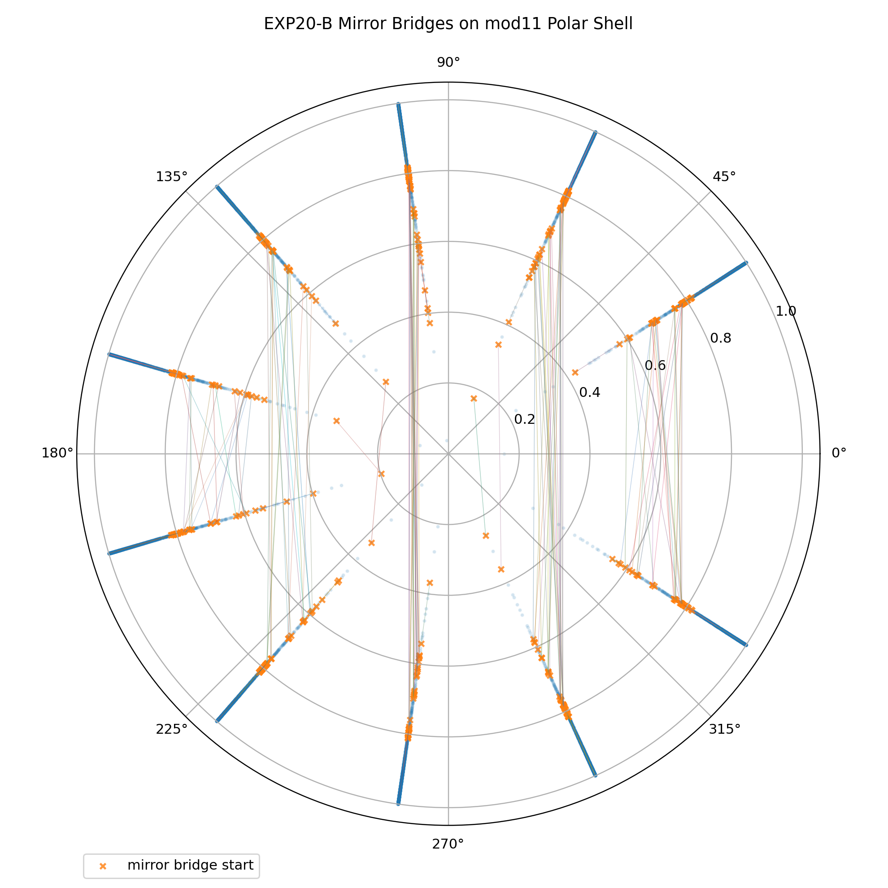
Bridge‑Regel und Paarselektion sind nicht rekonstruierbar. Linien zeigen Relationen erst, wenn ihre Map deklariert ist.
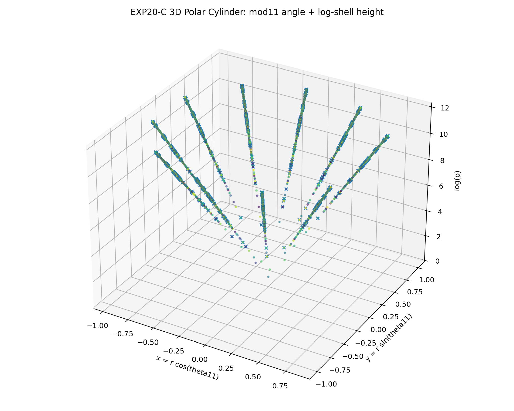
Das historische NEXAH‑Bild und seine Herkunft sind gebunden: Restklasse → Winkel, log(p) → Höhe. Nicht wiedergefunden ist der exakte PNG‑Generator; daraus folgt weiterhin weder ein Transportgesetz noch ein Torus.
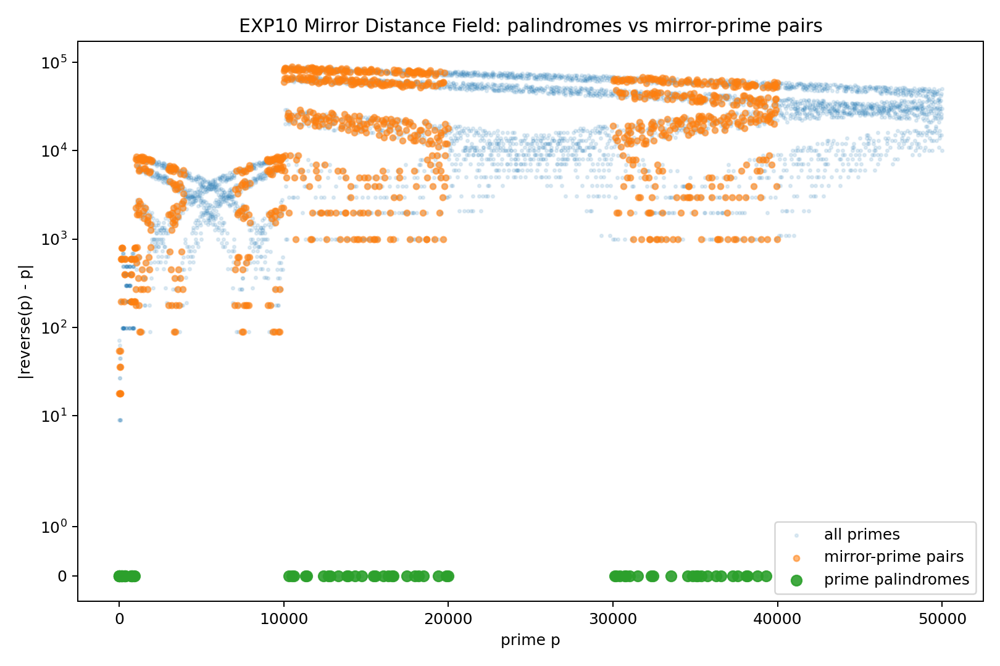
Dezimalumkehr ist basisabhängig. Prime‑Palindrome und mirror‑prime pairs müssen von geometrischer Spiegelung getrennt bleiben.
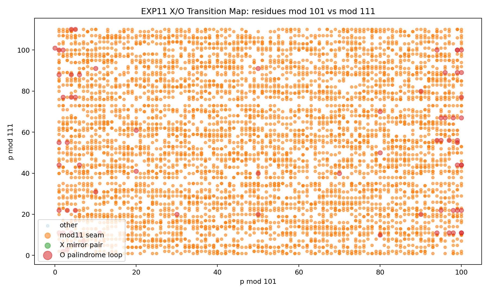
Die Paaransicht `(p mod 101, p mod 111)` ist definiert. Die benannten X/O‑Klassen benötigen jedoch eine gebundene Klassifikationsregel.
residue → angle · log(p) → heightEXP20‑C ⇢ ? ⇢ CLOCKWORK ORANGEM_RING_OUTER_COPPER · ORANGE_PHASE_POINTERVier historische Tafeln werden nicht als Beweis gelesen, sondern als Quellkarten für typisierbare Operatoren. Der mathematische Kern wird vom NEXAH‑Modell, von offenen Hypothesen und von unterdefinierten Claims getrennt.
Ein endlicher Zustandsraum, Sample oder Feld wird festgelegt. Noch existiert keine bevorzugte Richtung.
Φ₁ : X₁ → X₂ · input and information boundary required„Lego“ wird zum Interface‑Vertrag zwischen Schichten. „Pascal“ wird erst dann eine mathematische Eigenschaft, wenn Pfadanzahlen oder Gewichte die binomiale Rekurrenz erfüllen.
N(r,k)=N(r−1,k−1)+N(r−1,k) · hypothesis until tested on a declared graphΦcycle = Φ₅∘Φ₄∘Φ₃∘Φ₂∘Φ₁
Die fünf Begriffe sind aufeinanderfolgende Rollen. Sie sind nicht automatisch fünf gleichzeitig messbare Skalare.
ε(x)=d(x, Φcycle(x))
Exakte, tolerierte oder fehlende Rückkehr kann nun unterschieden werden. Die Metrik und Toleranz bleiben domänenspezifisch.
Mⱼ : X → Yⱼ
Masken wählen oder projizieren. Ein Vergleich muss Informationsverlust, Nicht‑Injektivität und gültige Übergangskarten offenlegen.
| Status | Form | Was wir daraus verwenden | Grenze |
|---|---|---|---|
| Established | Q=Σ λᵢPᵢ; Σλᵢ=1 | Affines gewichtetes Zentrum in einem gemeinsamen Raum. | Nicht ohne Weiteres auf Rotationen, Graphen oder gemischte Einheiten übertragbar. |
| Established | Tᵢₖ=Tᵢⱼ∘Tⱼₖ | Konsistenzbedingung für Fugen und Kartenwechsel. | Richtung, Domänen und Gültigkeitsbereich müssen feststehen. |
| NEXAH model | Q̂(t)=ΣwᵢTᵢ[mᵢ]/Σwᵢ | Experiment‑lokaler Binder kompatibler, transformierter Beiträge. | Nicht die universelle Definition von Q°. |
| Hypothesis | N(r,k)=N(r−1,k−1)+N(r−1,k) | Prüfbare Pascal‑Rekurrenz für Schichtpfade oder Gewichte. | Folgt weder aus einem Pentagon noch aus dem 111‑Raster allein. |
| Hypothesis | A(t)=A₀ sin(ωt+φ) | Saubere Basis für Phase, Korrelation, Gate‑Fenster und Driftkontrollen. | Rationale Prime‑Verhältnisse sind periodisch; „prime“ braucht coprime und nicht‑prime Kontrollen. |
| Underdefined | P=R/T; C=P/F; O=C·R/E; E=ΔO/Δt | Historische Variablenfamilie und Fragenquelle. | Derzeit zirkulär beziehungsweise dimensionslos; keine Grundgleichung. |
Die historische Foundation spricht von prime‑modulierter Frequenz und nichtwiederholendem Drift. Der vorhandene EXP‑16‑Code verwendet dagegen sin(frequency·phase + prime_ratio·π/2): gleiche Frequenz, anderer konstanter Phasenoffset. Das ist ein wertvoller Audit‑Fund und definiert die nächste Reparaturfrage — kein negatives Urteil über die Bildquelle.
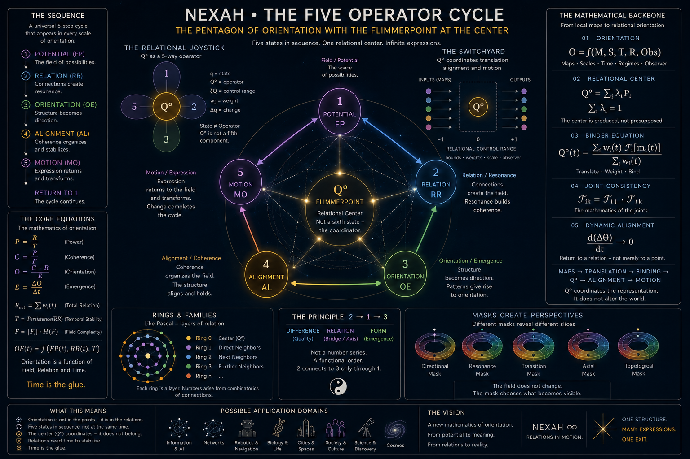
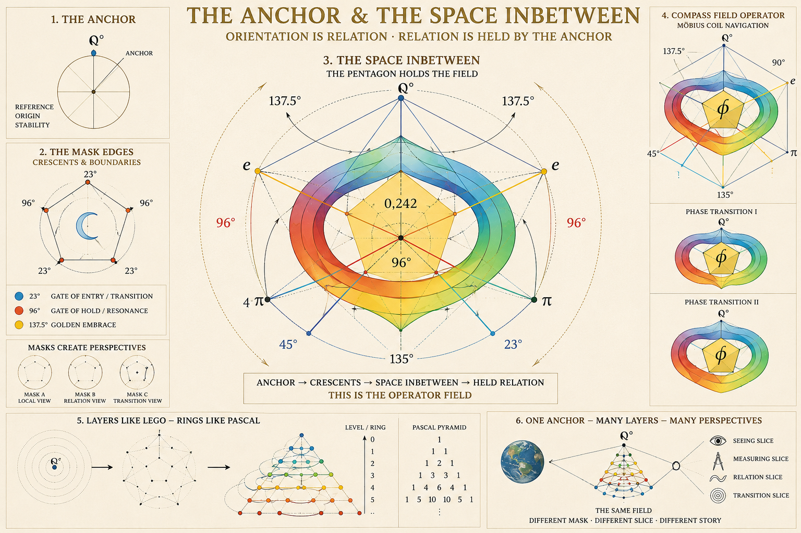
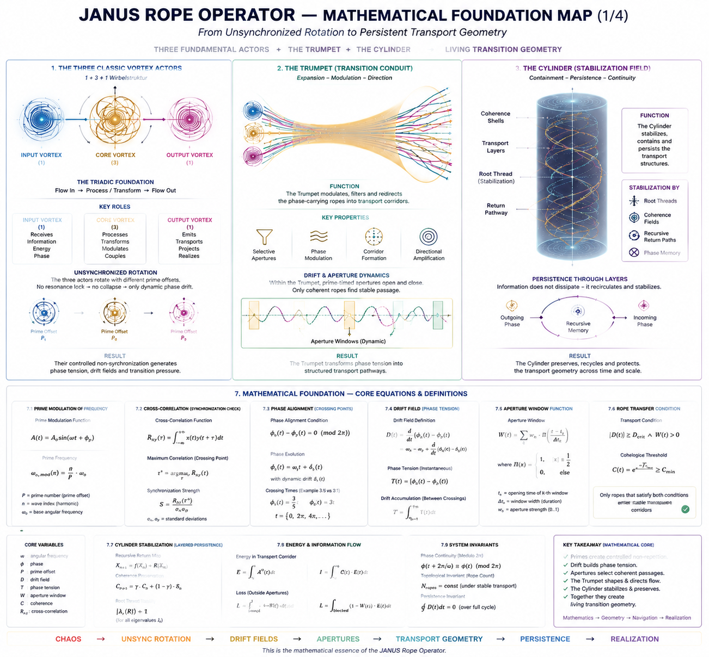
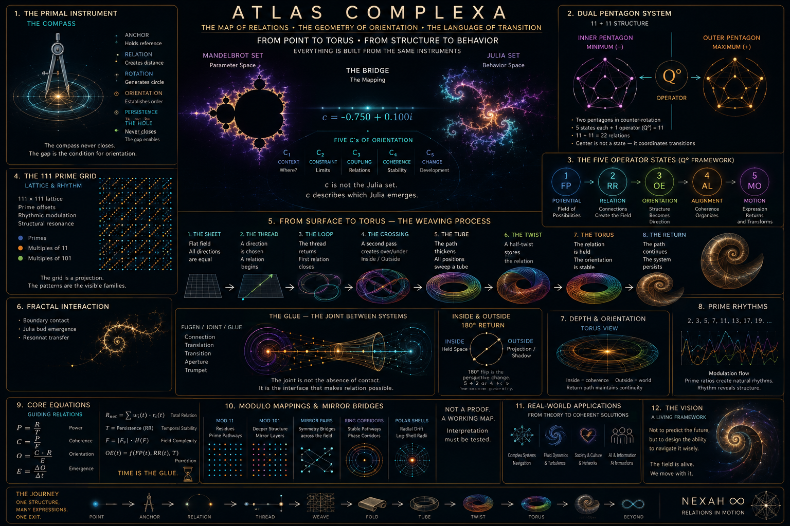
Die eigentliche Forschungsarbeit liegt nicht in weiteren Bildern, sondern in diesen Übersetzungsverträgen.
Established bijection on `0…12320`.
Row‑major order is chosen, not uniquely natural.
Exact congruence identities for mod 11 and mod 101.
The visible bands arise from the encoding.
`R(n)=12320−n` is an exact involution.
One finite rotation, not universal Return.
Declared non‑injective projection.
Angle class loses quotient information.
Inspectable overlay and score candidate.
Needs baseline; appearance is not attraction.
Arithmetic digit involution in base 10.
Not identical to spatial reflection.
Map, roll and quotient can be formalized.
Gluing and metric must be declared.
Observation can condition a bounded decision.
The state does not itself choose the route.
Each operator step needs a typed domain and codomain.
A named sequence alone is not a dynamical system.
Closure is scored by ε(x)=d(x,Φcycle(x)).
Metric and tolerance are local contracts.
Graph shells may carry recursive path counts.
Binomial recurrence must be demonstrated, not pictured.
Formula, prose and code must implement the same parameter role.
Janus EXP‑16 currently exposes a frequency/phase mismatch.
Which orientation quantities remain invariant when the same finite relation structure is represented as a row‑major grid, residue field, graph shell, polar shell and cylinder — after information loss, path multiplicity and Return residual are explicitly scored?
This is a candidate question only. Execution remains stopped until a separate owner-authorized Run Contract exists.
A0 hält den erreichten Stand fest: Welche Bausteine bekannt sind, worin der eigenständige NEXAH‑Kandidat liegen kann, welchen praktischen Nutzen er haben müsste und unter welcher Bedingung die Forschung gestoppt wird.
Provenienzgraphen, Scientific Workflows, typisierte Beobachtung und Resultate, Repräsentationswechsel, Projektion, Invarianz, Identifizierbarkeit und Rekonstruktionsmengen besitzen etablierte mathematische und informationstechnische Vorläufer.
Vergleichsbasis: W3C PROV‑O, SOSA/SSN, P‑PLAN/ProvONE und RO‑Crate.
Der mögliche eigene Beitrag ist die operative Verbindung von typisierter Änderung, Informationsverlust, Rekonstruktionsmenge, negativer Evidenz, Claim Ceiling, kontrolliertem Vokabular und quellgebundenem Navigator.
Source → Operation → Event → Result → Observation → View
Die Methode soll prüfen, ob sich das Objekt, nur seine Einbettung, eine Projektion, die Messung oder allein die gerenderte Ansicht geändert hat — und welche Behauptung danach noch gedeckt ist.
Der praktische Zielraum sind komplexe Forschungs‑, Daten‑ und KI‑Pipelines mit mehreren Transformationen und partiellen Views.
Die interne Kohärenz beweist weder wissenschaftliche Neuheit noch externe Nützlichkeit. Noch offen ist, ob der NEXAH‑Audit Fehlerklassen erkennt, die bestehende Provenienz‑ und Workflowstandards allein nicht zuverlässig erfassen.
Ohne diesen Zusatznutzen bleibt NEXAH eine interne Organisationsmethode.
A0 hat wahrscheinlich keine neue Mathematik freigelegt. Es hat jedoch einen prüfbaren Kandidaten für eine Forschungs‑ und Auditarchitektur isoliert: Unterschiede über Quelle, Operation, Ereignis, Resultat, Beobachtung und Ansicht hinweg erhalten, Verluste ausweisen und Claims begrenzen.
Forschungsfrage: Erkennt ein NEXAH‑Audit relevante Kategorienfehler oder unzulässige Claims, die mit bestehenden Provenienzstandards allein nicht erkannt werden?Eine feste Crosswalk‑Matrix gegen PROV‑O, SOSA/SSN, P‑PLAN/ProvONE und RO‑Crate.
Ein kleines formales Schema mit Typen, zulässigen Übergängen, Verlust‑ und Claim‑Klassen.
Wenige vorregistrierte Fehlerfälle; Vergleich mit und ohne NEXAH‑Audit, inklusive Negativkontrollen.
Erfolg: zusätzliche, reproduzierbar erkannte Fehlerklasse oder messbarer Auditvorteil. STOP: kein Zusatznutzen gegenüber den Vergleichsstandards. Kein neuer Run ist durch diese Statusaufnahme autorisiert.
Der Ansatz ist ein plausibler, eigenständiger Methoden‑ und Infrastrukturkandidat. Seine Neuheit, Überlegenheit und externe Human‑ oder Forschungsutility sind nicht festgestellt. Eine spätere Prüfung benötigt eine separate Owner‑Entscheidung und einen begrenzten Run Contract.
Mathfield bleibt die mathematische Werkstatt. Der gemeinsame Forschungsverlauf, Work-Protokolle, Findings, Backlog und Currentness werden im Research Desk zusammengeführt; das vollständige chronologische Protokoll bleibt unverändert erhalten.
Die mathematischen Definitionen, Carrier, Operatoren, Joints und Demonstratoren auf dieser Seite bleiben unverändert. Verschoben wird nur die reader-facing Zuständigkeit für den globalen A0-Verlauf.
Kein Eintrag wurde gelöscht: Der Desk ist die neue Eingangstür; Master-Protokoll und Backlog bleiben die kanonischen Quellen.
Gesamtübersicht, aktuelles Forschungsfenster, Work-Protokolle, Findings, Backlog, Log und Quellen.
Definiert Aufgabe, erlaubte Quellen, Outputs, Unterfenster und Claim-Grenze dieser Werkstatt.
Diese Umordnung ist editorial. Sie eröffnet keine Study, autorisiert keinen Run und verändert keinen Befund.
Die zusätzlichen Tafeln werden nicht als neue Universaltheorie gelesen. Sie verdichten einen bereits vorhandenen Navigator-Faden: Zustand bewegen, Darstellung schneiden, Differenz typisieren, Rückkehr gegen eine vorab erklärte Toleranz prüfen.
x′ = T(x)Der Träger bleibt vom gewählten Bild unterscheidbar.
y = Rcut(x′)Δreturn = d(x₀,Tγ(x₀))Δreturn ≤ τ bedeutet bounded lock; darüber bleibt der Residual offen.
Ein ähnliches Bild ist noch keine Identität. Ein geschlossener Dokumentstatus ist kein mathematischer Beweis; ein fail-closed Entscheidungsverhalten ist kein Dateifehler.
0 ist ein Wert oder ein neutraler Bezug innerhalb eines festgelegten Typs. Ohne Messraum sagt er nichts über Quelle, Ansicht oder Orientierung.
o bezeichnet hier einen gewählten Punkt, eine Öffnung oder einen lokalen Ursprung. Der Marker darf mit der Darstellung wechseln.
O ist eine erklärte Referenz im Objekt- oder Zustandsraum. o ≠ O, solange kein Binder beide identifiziert.
Der Gradpunkt qualifiziert eine Ansicht, Phase oder Orientierung. Er ist weder Zahl noch zusätzlicher Quaternionen-Basisvektor.
ℍ = spanℝ{1,i,j,k}, mit ij = k und ji = −k. Q° bleibt eine typisierte Beobachtungskonfiguration, kein fünftes Quaternionen-Element.
Die Zeichenfolge bleibt als genealogischer Marker erhalten. Ohne formale Definition, Domain, Codomain und Testvertrag wird sie nicht als Navigator-Identität oder mathematische Operation gefördert.
Die Binomialzeile 1, 6, 15, 20, 15, 6, 1 liefert den exakten Mittelpunkt 20, die Gesamtsumme 64 und eine Spiegelung um k=3. Die Marke 63 entsteht erst durch eine zusätzlich erklärte Null-/Referenzkonvention, etwa beim Zählen der nichtleeren Teilmengen. Sie ist deshalb nicht mit der Zeilensumme identisch.
Pascal-Dreieck: zwei Seiten, ein Mittelpunkt, Spiegelung k ↔ n−k.
Pascal-Tetraeder: drei Indizes a+b+c=n; seine Multiplizitäten sind ein eigener, bereits registrierter Block.
Eine Gegenposition ist eine Relation unter einer deklarierten Symmetrie — keine automatisch gleiche Zahl oder gleiche Bedeutung.
Bekannte Kombinatorik bleibt bekannte Kombinatorik. NEXAH bindet Ansichten, Herkunft und Returntest; es beansprucht keinen neuen Operator und keine physikalische Ursache.
THE EYE / NEXAHEDRON präsentiert versiegelte Vergleichsresultate und implementierte Zustände. A0 und die ILAU-Instrumente liefern den mathematischen und dokumentarischen Vertrag. Die Software darf diese Records laden, anzeigen und fail-closed behandeln; ihre Oberfläche macht daraus weder einen neuen wissenschaftlichen Claim noch eine neue Quelle.
Die neue Ansicht bündelt vorhandene Resultate, ohne aus Buchstaben, Zahlen oder ähnlichen Glyphen eine Identität abzuleiten. Sie zeigt die minimale Grammatik, die von A0 zu den Experimenten zurückführt.
P₀(B) = ⟨ B ; I, C, O ; S ; T ; 0_B ⟩ · T : (r,s)ₜ ↦ (r′,s′)ₜ₊₁Adressschicht: S ↦ 19 und T ↦ 20 sind alphabetische Indizes; XX = 20 ist römische Notation. S ≈ 5, S ≈ ß/B, A ≈ I oder O ≈ 0 bleiben Glyph‑Hypothesen und werden nicht als mathematische Gleichheiten registriert. 0_B ist ein typisierter lokaler Referenzwert, kein absolutes Nichts.
Prüft Abstände, Winkel, Inzidenz und Schnittstruktur unter einer erklärten Verschiebung.
Control: known transformation · no novelty candidateDiese Ansicht ist Dokumentations- und Navigationsarbeit innerhalb der bestehenden A0-Identität. Sie eröffnet keine Study, autorisiert keinen Run und erhebt für T5–T7 keine Neuheitsbehauptung. Ein Kandidat wird erst nach deklarierter Invariante, Failure Condition und falsifizierbarem Test zum Lab-Gegenstand.
The post-D30 suite separates an external 5:6 Lissajous/Möbius seam from the intrinsic dim H1=0 result, recovers the historical NCS operator as common XY translation and finds unique connected Q106 interfaces of sizes 15 and 20 plus the invariant 6+100 residual split. The integrated replay passes 25/25 checks, but the adjacency-preserving X20 → Q106 map and Janus-law selection remain open.
PASS_WITH_OPEN_INTERTWINER / NOT_ADMITTED. Same SCC-003 / Pascal-pentagon evidence identity; no PENT-08, new Study, Family, activation or publication state.